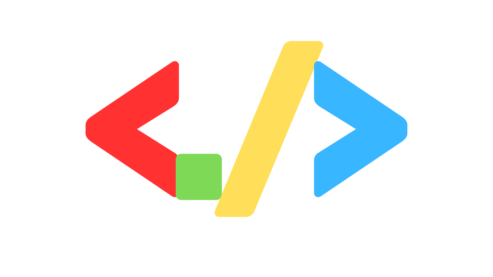
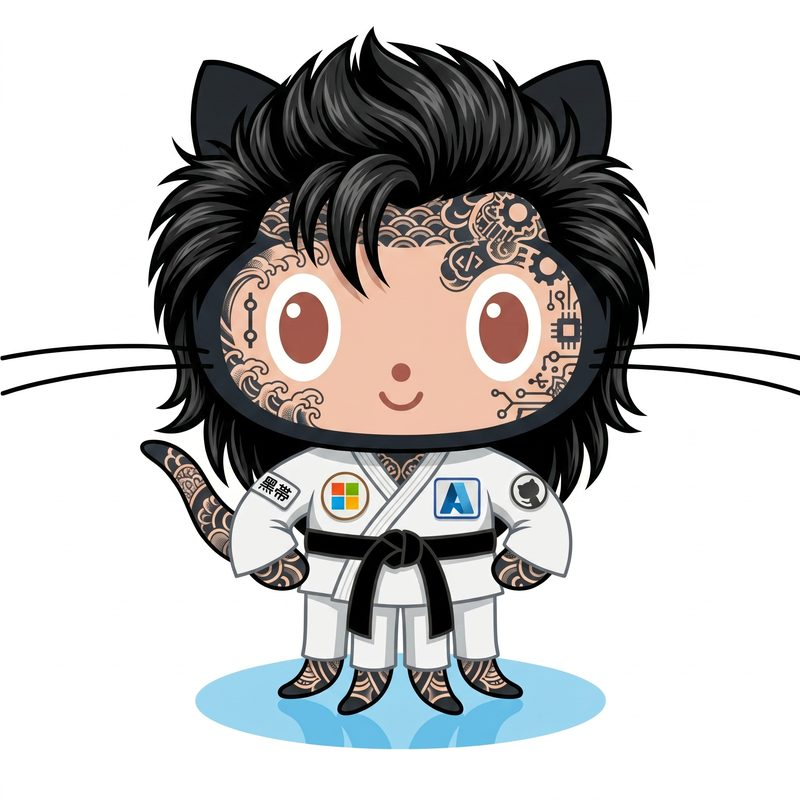

Paula Silva | Software Global Black Belt · Knowledge HubA consolidated body of work on the engineering disciplines that turn AI pilots into production systems. Fifteen interconnected topics, each available as a deck, a landing page, and a long-form playbook. Um corpo de trabalho consolidado sobre as disciplinas de engenharia que transformam pilotos de IA em sistemas em produção. Quinze tópicos interconectados, cada um disponível como deck, landing page e playbook completo. Un cuerpo de trabajo consolidado sobre las disciplinas de ingeniería que transforman los pilotos de IA en sistemas en producción. Quince tópicos interconectados, cada uno disponible como deck, landing y playbook completo.

Five topics, one model. The Agentic DevOps body of work is organized as a four-layer stack plus a transversal economy: tokens. Modernization is the migration path that brings legacy systems onto this stack. Cinco temas, um modelo. O corpo de trabalho de Agentic DevOps é organizado como um stack de quatro camadas mais uma economia transversal: tokens. Modernização é o caminho de migração que traz sistemas legados para este stack. Cinco temas, un modelo. El cuerpo de trabajo de Agentic DevOps se organiza como un stack de cuatro capas más una economía transversal: tokens. La modernización es el camino de migración que lleva los sistemas legados a este stack.
Each topic ships in three formats: a discovery landing page, a presentation deck, and a long-form playbook. The same thesis, calibrated to how you need to engage with it.Cada tema é entregue em três formatos: uma landing de descoberta, um deck de apresentação e um playbook completo. A mesma tese, calibrada para a forma como você precisa engajar com ela.Cada tema se entrega en tres formatos: una landing de descubrimiento, un deck de presentación y un playbook completo. La misma tesis, calibrada para la forma en que necesitas interactuar con ella.
The foundation layer for the AI-native enterprise. CNCF four pillars (Golden Paths, Guardrails, Safety Nets, Manual Review) plus the Open Horizons accelerator: 22 Backstage templates, 17 Copilot agents, 16 Terraform modules.A camada base da empresa AI-native. Quatro pilares CNCF mais o acelerador Open Horizons: 22 templates Backstage, 17 agentes Copilot, 16 módulos Terraform.La capa base de la empresa AI-native. Cuatro pilares CNCF más el acelerador Open Horizons: 22 templates Backstage, 17 agentes Copilot, 16 módulos Terraform.
Four interdependent layers of engineering discipline that prevent the agent cemetery: Cloud Infra, Platform, Context, Intent. With Harness Engineering as the sixth layer.Quatro camadas interdependentes que previnem o cemitério de agentes: Cloud Infra, Plataforma, Contexto, Intenção. Harness Engineering como sexta camada.Cuatro capas interdependientes que previenen el cementerio de agentes: Cloud Infra, Plataforma, Contexto, Intención. Harness Engineering como sexta capa.
Vendor-neutral framework for engineering deterministic, reusable semantic context that grounds AI coding agents in enterprise codebases. Four capability pillars, eight context recipes.Framework vendor-neutral para contexto semântico determinístico e reusável que ancora agentes de IA em bases corporativas. Quatro pilares, oito receitas.Framework vendor-neutral para contexto semántico determinístico y reutilizable que ancla agentes de IA en bases corporativas. Cuatro pilares, ocho recetas.
Comprehensive playbook for the era of token-based billing. June 2026 GitHub Copilot transition, context engineering, prompt caching, agent design patterns. Targeting 25-45% cost reduction over baseline.Playbook completo para a era de cobrança por tokens. Transição do GitHub Copilot em junho 2026, context engineering, prompt caching, padrões de agente. Meta: 25-45% de redução vs. baseline.Playbook completo para la era de facturación por tokens. Transición del GitHub Copilot en junio 2026, context engineering, prompt caching, patrones de agente. Meta: 25-45% de reducción vs. baseline.
Strategy guide and runbook for COBOL, Natural, and mainframe modernization. Gartner 5R framework, four Microsoft approaches, Carving / Performance / Coexistence operational playbook.Guia estratégico e runbook para modernização de COBOL, Natural e mainframe. Framework 5R do Gartner, quatro abordagens Microsoft, playbook operacional Carving / Performance / Coexistence.Guía estratégica y runbook para modernización de COBOL, Natural y mainframe. Framework 5R de Gartner, cuatro enfoques Microsoft, playbook operacional Carving / Performance / Coexistence.
Vendor-neutral CNCF-based DevOps platform for the agentic era. Three horizons (now, near, far), CNCF maturity model, golden paths and policy-as-code on Azure.Plataforma DevOps vendor-neutral baseada em CNCF para a era agêntica. Três horizontes, modelo de maturidade CNCF, golden paths e policy-as-code no Azure.Plataforma DevOps vendor-neutral basada en CNCF para la era agéntica. Tres horizontes, modelo de madurez CNCF, golden paths y policy-as-code en Azure.
Same Three Horizons reference, materialized with the Red Hat OpenShift + AAP + Quay stack on Azure. Vendor-supported substrate for orgs that want a single throat to choke.Mesmas Três Horizontes, materializadas com a stack Red Hat OpenShift + AAP + Quay no Azure. Substrato com suporte do fornecedor.Mismas Tres Horizontes, materializadas con el stack Red Hat OpenShift + AAP + Quay en Azure. Sustrato con soporte del vendor.
Complete map of GitHub Copilot configuration in VS Code. Ten layers, three tiers (hot, warm, cold). Workspace, authoring, runtime, what each file does and when to use it.Mapa completo de configuração do GitHub Copilot no VS Code. Dez camadas, três tiers (hot, warm, cold). Workspace, autoria, runtime.Mapa completo de configuración de GitHub Copilot en VS Code. Diez capas, tres tiers (hot, warm, cold). Workspace, autoría, runtime.
Specifications upstream make AI agents reliable, testable, reviewable. Spec Kit + Specky as the contract that turns chatbot prompts into engineering. TDD with agents.Especificações upstream tornam agentes de IA confiáveis, testáveis, revisáveis. Spec Kit + Specky como contrato que transforma prompts de chatbot em engenharia.Las especificaciones upstream vuelven los agentes de IA confiables, testables, revisables. Spec Kit + Specky como contrato que convierte prompts de chatbot en ingeniería.
The full portfolio: Copilot Studio, GitHub Copilot Agents, Azure AI Foundry. Three platforms, one decision framework. Verticals plus Human-in-the-Loop guardrails.Portfólio completo: Copilot Studio, GitHub Copilot Agents, Azure AI Foundry. Três plataformas, uma estrutura de decisão. Verticais com guardrails Human-in-the-Loop.Portafolio completo: Copilot Studio, GitHub Copilot Agents, Azure AI Foundry. Tres plataformas, un marco de decisión. Verticales con guardrails Human-in-the-Loop.
Eight-part masterclass: definition, three platforms, agent types, Human-in-the-Loop quadrants, vehicle leasing case study, vertical examples, architecture principles, deployment.Masterclass em oito partes: definição, três plataformas, tipos de agentes, quadrantes HITL, caso locação de veículos, verticais, princípios, deploy.Masterclass en ocho partes: definición, tres plataformas, tipos de agentes, cuadrantes HITL, caso leasing de vehículos, verticales, principios, despliegue.
The umbrella topic that unifies all five layers (Cloud Infra, Platform, Context, Intent, Harness) plus the token economy. 14 chapters and 4 appendices for the comprehensive Agentic DevOps body of work.O tópico guarda-chuva que unifica as cinco camadas (Cloud Infra, Platform, Context, Intent, Harness) mais a economia de tokens. 14 capítulos e 4 apêndices.El tópico paraguas que unifica las cinco capas (Cloud Infra, Platform, Context, Intent, Harness) más la economía de tokens. 14 capítulos y 4 apéndices.
Internal developer marketplace for APIs and tools. Lifecycle management, RBAC, contract testing, golden paths for API consumers, and the FinOps angle when AI agents call APIs at scale.Marketplace interno para APIs e ferramentas. Gestão de ciclo de vida, RBAC, testes de contrato, golden paths e o ângulo FinOps quando agentes IA consomem APIs em escala.Marketplace interno para APIs y herramientas. Gestión de ciclo de vida, RBAC, pruebas de contrato, golden paths y el ángulo FinOps cuando agentes IA consumen APIs a escala.
Engineering team onboarding for agentic SDLC literacy. Personas, week-by-week curriculum, hands-on labs, common pitfalls, and the measurement framework for adoption maturity.Onboarding de times de engenharia para letramento em agentic SDLC. Personas, currículo semanal, labs práticos, armadilhas comuns e framework de medição.Onboarding de equipos de ingeniería para alfabetización en agentic SDLC. Personas, currículo semanal, labs prácticos, trampas comunes y framework de medición.
Personal-identity deep dive into the customization surfaces of GitHub Copilot: skill anatomy, agent decision tree, plugins, hooks lifecycle, orchestration patterns, and configuration hierarchy.Deep dive identidade pessoal sobre superfícies de customização do GitHub Copilot: anatomia de skills, árvore de decisão de agentes, plugins, hooks, orquestração e hierarquia de configuração.Deep dive identidad personal sobre superficies de customización de GitHub Copilot: anatomía de skills, árbol de decisión de agentes, plugins, hooks, orquestación y jerarquía de configuración.
Interactive calculator and methodology for quantifying agentic AI return on investment across the SDLC. Role-specific ROI for 24 personas, baseline benchmarks, scenario modeling, and CFO-ready outputs.Calculadora interativa e metodologia para quantificar retorno de IA agêntica ao longo do SDLC. ROI por papel para 24 personas, benchmarks de baseline, modelagem de cenários e saídas prontas para o CFO.Calculadora interactiva y metodología para cuantificar retorno de IA agéntica a lo largo del SDLC. ROI por rol para 24 personas, benchmarks de baseline, modelado de escenarios y salidas listas para el CFO.
Role-by-role analysis of AI impact across the 24 personas of the modern SDLC. Trilingual 25-slide deck (v3.0), 68k-word long-form companion, four-wave transformation framework, five-level GitHub Copilot hierarchy, ODM matrix, and a companion Astro site.Análise papel a papel do impacto de IA nas 24 personas do SDLC moderno. Deck trilíngue de 25 slides (v3.0), long-form de 68 mil palavras, framework de transformação em quatro ondas, hierarquia Copilot em cinco níveis, matriz ODM e site Astro complementar.Análisis rol por rol del impacto de IA en las 24 personas del SDLC moderno. Deck trilingüe de 25 slides (v3.0), long-form de 68 mil palabras, marco de transformación en cuatro olas, jerarquía Copilot en cinco niveles, matriz ODM y sitio Astro complementario.
Open-source frameworks, platform accelerators, and an assessment SaaS used by teams that take this body of work into production. Each one solves a concrete problem the hub describes. Frameworks open-source, aceleradores de plataforma e um SaaS de avaliação usados por times que levam este corpo de trabalho para produção. Cada um resolve um problema concreto descrito no hub. Frameworks open-source, aceleradores de plataforma y un SaaS de evaluación usados por equipos que llevan este cuerpo de trabajo a producción. Cada uno resuelve un problema concreto descrito en el hub.
MCP server with 53 validated tools that turn the SDD methodology from Spec-Kit into a programmable enforcement engine. Specs become reviewable, testable, and shippable contracts that agents read upstream. Servidor MCP com 53 ferramentas validadas que transformam a metodologia SDD do Spec-Kit em um motor de enforcement programável. Specs viram contratos revisáveis, testáveis e entregáveis que os agentes leem upstream. Servidor MCP con 53 herramientas validadas que convierten la metodología SDD del Spec-Kit en un motor de enforcement programable. Specs se vuelven contratos revisables, testables y entregables que los agentes leen upstream.
CNCF OSS stack on Azure: AKS, Backstage, Argo CD, Tekton, OPA Gatekeeper, Kyverno, Sigstore, OpenTelemetry. Compresses the path from raw infra to production AI workloads from 9-18 months to 90-180 days. Stack CNCF OSS no Azure: AKS, Backstage, Argo CD, Tekton, OPA Gatekeeper, Kyverno, Sigstore, OpenTelemetry. Comprime o caminho de infra raw para cargas de IA em produção de 9-18 meses para 90-180 dias. Stack CNCF OSS en Azure: AKS, Backstage, Argo CD, Tekton, OPA Gatekeeper, Kyverno, Sigstore, OpenTelemetry. Comprime el camino de infra raw a cargas de IA en producción de 9-18 meses a 90-180 días.
OpenShift + Ansible Automation Platform + Quay + Advanced Cluster Security on Azure, jointly supported by Microsoft and Red Hat. The vendor-backed alternative to Open Horizons for organizations that need a single throat to choke for production support. OpenShift + Ansible Automation Platform + Quay + Advanced Cluster Security no Azure, com suporte conjunto Microsoft e Red Hat. Alternativa com suporte de fornecedor à Open Horizons para organizações que precisam de uma única ponta de contato para suporte em produção. OpenShift + Ansible Automation Platform + Quay + Advanced Cluster Security en Azure, con soporte conjunto Microsoft y Red Hat. Alternativa con soporte del vendor a Open Horizons para organizaciones que necesitan una sola contraparte para soporte en producción.
Assessment platform that maps your team across the dimensions that determine whether AI investments compound or amplify existing friction. Outputs a roadmap, not just a score. Plataforma de avaliação que mapeia seu time nas dimensões que determinam se investimentos em IA se acumulam ou amplificam fricção existente. Entrega um roadmap, não apenas um score. Plataforma de evaluación que mapea a tu equipo en las dimensiones que determinan si las inversiones en IA se acumulan o amplifican fricción existente. Entrega un roadmap, no solo un score.
Interactive React calculator combining 24 SDLC persona ROI models, six Gartner research anchors, NPV / IRR / scenario analysis, and an architecture advisor that recommends Single Agent vs Multi-Agent Pipeline. Outputs CFO-ready business cases with sensitivity tables. Calculadora React interativa combinando 24 modelos de ROI por persona do SDLC, seis âncoras Gartner, análise NPV / IRR / cenários e advisor de arquitetura (Single Agent vs Multi-Agent Pipeline). Saída pronta para CFO com tabelas de sensibilidade. Calculadora React interactiva combinando 24 modelos de ROI por persona del SDLC, seis anclas Gartner, análisis NPV / IRR / escenarios y advisor de arquitectura (Single Agent vs Multi-Agent Pipeline). Salida lista para CFO con tablas de sensibilidad.
Side-scrolling browser game that teaches the core concepts of agentic DevOps through pixel-art levels: agents, MCP servers, governance, and the path from ask to plan to agent. Press start, learn by playing. Jogo browser side-scrolling que ensina os conceitos centrais de agentic DevOps em fases pixel-art: agentes, MCP servers, governança e o caminho de ask para plan para agent. Aperte start, aprenda jogando. Juego browser side-scrolling que enseña los conceptos centrales de agentic DevOps en fases pixel-art: agentes, MCP servers, gobernanza y el camino de ask a plan a agent. Aprieta start, aprende jugando.
Most companies aren't adopting AI. They're buying the feeling of adopting AI. I work with the ones that want to do it differently. A maioria das empresas não está adotando IA. Está comprando a sensação de adotar IA. Trabalho com as que querem fazer diferente. La mayoría de las empresas no está adoptando IA. Está comprando la sensación de adoptar IA. Trabajo con las que quieren hacerlo diferente.
Software Global Black Belt at Microsoft Americas, focused on Agentic DevOps Platform for enterprise clients across Latin America. Twenty years in technology: data center transformation, application modernization, enterprise architecture, and now agentic engineering. Before Microsoft: Accenture, AWS, and Google Cloud. I write on Medium, in English and Portuguese, about AI adoption, Spec-Driven Development, platform engineering, and what is really happening inside companies trying to scale AI. Always grounded in empirical evidence and the papers that support each argument. Software Global Black Belt na Microsoft Americas, focada em Agentic DevOps Platform para clientes enterprise na América Latina. Vinte anos em tecnologia: transformação de data center, modernização de aplicações, arquitetura enterprise, e agora engenharia agêntica. Antes da Microsoft: Accenture, AWS e Google Cloud. Escrevo no Medium, em inglês e português, sobre adoção de IA, Spec-Driven Development, platform engineering, e o que realmente acontece dentro de empresas tentando escalar IA. Sempre ancorado em evidência empírica e nos papers que sustentam cada argumento. Software Global Black Belt en Microsoft Americas, enfocada en Agentic DevOps Platform para clientes empresariales en América Latina. Veinte años en tecnología: transformación de data center, modernización de aplicaciones, arquitectura empresarial, y ahora ingeniería agéntica. Antes de Microsoft: Accenture, AWS y Google Cloud. Escribo en Medium, en inglés y portugués, sobre adopción de IA, Spec-Driven Development, platform engineering, y lo que realmente sucede dentro de empresas intentando escalar IA. Siempre anclado en evidencia empírica y los papers que sostienen cada argumento.
Building the future of software development with AI and Agentic DevOps.